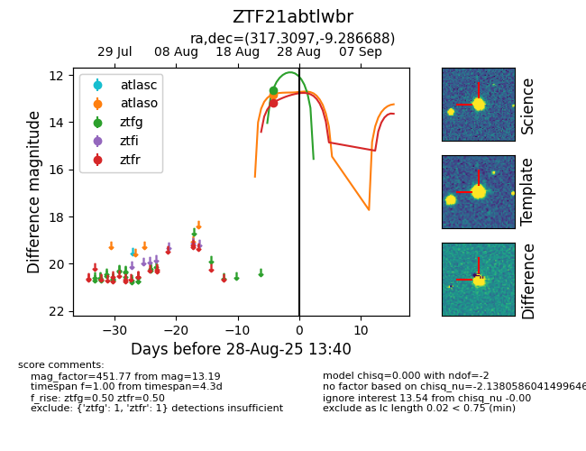

FINK: ZTF21abtlwbr
Lasair: ZTF21abtlwbr
ALeRCE: ZTF21abtlwbr
ZTF21abtlwbr (ztf,fink)
equatorial (ra, dec) = (317.3097,-9.28669)
galactic (l, b) = (40.6949,-34.78107)

last atlasc=17.07, atlaso=17.26, ztfg=16.88, ztfr=14.87
2 atlasc, 13 atlaso, 11 ztfg, 3 ztfr detections